図解：バルビゾン派
バルビゾン派の成立
- 19世紀まで
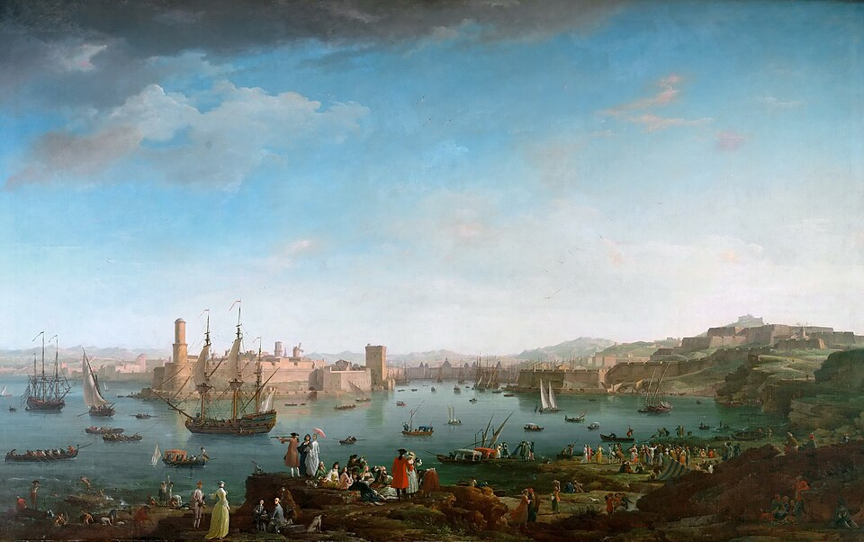
歴史画が頂点の序列風景画は下位
人物に合わせて理想化 - 1825〜
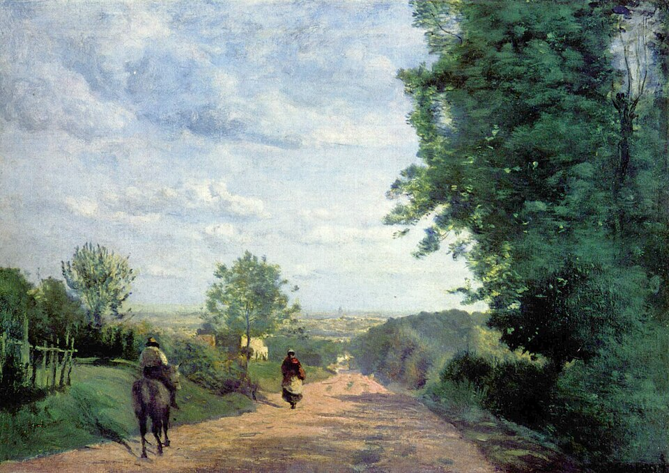
コローが写生を作品にベルタン・ミシャロンに学ぶ
野外写生を完成作へ高める - 1836
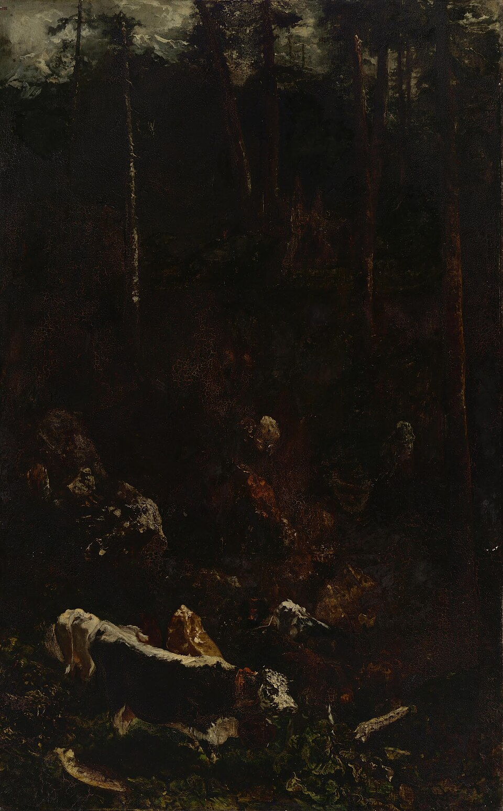
ルソーがバルビゾンへサロン落選を機に隠遁
慕う画家が村に集まる - 1850年代
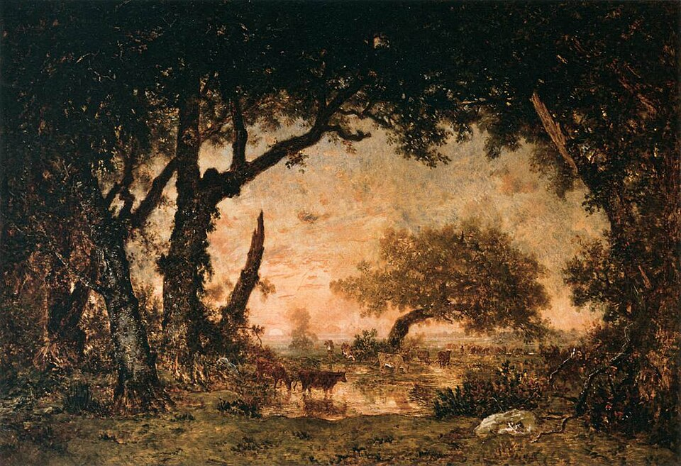
バルビゾン派の人気審査緩和で《日没》入賞
印象主義への架け橋に
従来の風景画と何が違うか
重要人物
戸外制作の先駆け
- ジャン＝ヴィクトール・ベルタン画家歴史画の構図に、習作から生き生きした自然
- アシル＝エトナ・ミシャロン画家旅の素描を手掛かりに、理想化せず仕上げる
- ジョルジュ・ミシェル画家目の前の風景を描く。評価は1900年の万博以降
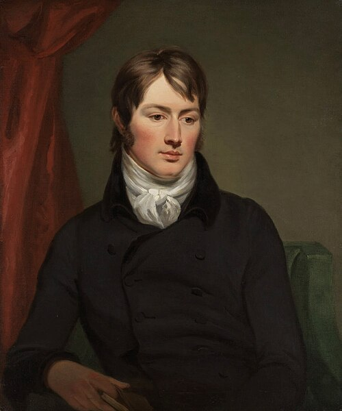
コンスタブル英国の画家1824年のサロンに出品。コローやデュプレに影響
バルビゾンの七星
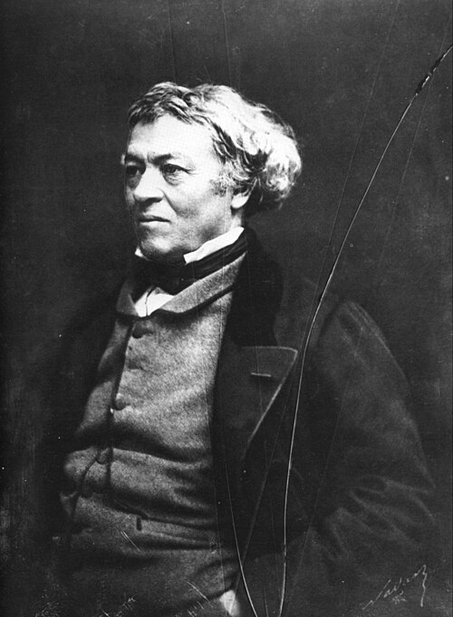
カミーユ・コロー画家野外写生を完成作に。晩年は銀灰色の風景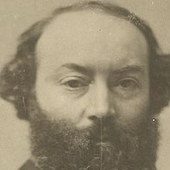
テオドール・ルソー画家「落選王」。村に住み《日没》で評価を得る- ナルシス・ディアズ・ド・ラ・ペーニャ画家ルソーを慕い村へ。暗い森に差す光を描く
- ジュール・デュプレ画家コンスタブルに憧れ、荒々しいタッチを残す
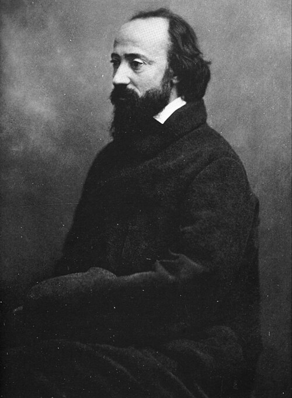
シャルル＝フランソワ・ドービニー画家「水辺の画家」。船を買い水面の光を観察- コンスタン・トロワイヨン画家風景より動物に関心。家畜を主題に描く
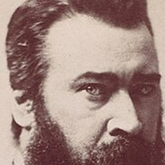
ジャン＝フランソワ・ミレー画家風景でなく村の農民を描き、賛否を呼ぶ
村の画家を伝えた人
影響を受けた印象派
肖像・図版の出典
- 《ジョン・コンスタブルの肖像》ラムゼイ・リチャード・ライナグル、1799年頃、ナショナル・ポートレート・ギャラリー（ロンドン）：出典（Public domain）
- カミーユ・コローの写真、ナダール撮影：出典（Public domain）
- テオドール・ルソーの写真、ナダール工房、フランス国立図書館：出典（Public domain）
- シャルル＝フランソワ・ドービニーの写真、ナダール撮影：出典（Public domain）
- ジャン＝フランソワ・ミレーの写真、ナダール撮影、1856～1858年頃、メトロポリタン美術館：出典（CC0）
- 《自画像》ピエール＝オーギュスト・ルノワール、1875年頃、クラーク美術館：出典（Public domain）
- 《クロード・モネ》ピエール＝オーギュスト・ルノワール、1875年、オルセー美術館：出典（Public domain）
バルビゾン村と七星
画家たちを迎えた村
動画 1:49～1830年代からフランスに現れたバルビゾン派は、ほぼ同時期のレアリスムや、後の印象主義に影響を与えました。バルビゾンはパリから約60キロ南、フォンテーヌブローの森となだらかな平野に囲まれた村です。フォンテーヌブロー宮殿にも近く、その自然に魅せられた風景画家たちが集まり、交流したことから、この名が生まれました。今も美しい風景を残す画家の村として知られ、観光地となっています。
村人も訪れる画家たちを歓迎しました。特にガンヌ夫妻の旅館は、画家の憩いの場でした。もとは食料品店を営んでいましたが、画家へ食事を出すうちに宿も経営するようになりました。美しい景色に加え、こうした人々の温かさも、画家たちを引き付けたのです。
バルビゾンの七星
動画 2:51～バルビゾン派の一人として多くの画家と交流したジョルジュ・ガシエスは、著書『昔日のバルビゾン―ある風景画家の青春の思い出』で、村の静けさ、邪魔されず穏やかに制作できること、宿代と食費の安さを伝えています。その評判は画家たちのアトリエにも届き、特に風景画家や動物画家は、多くの画題を見つけられると確信して訪れました。訪れた画家は100人以上に及び、広い意味でのバルビゾン派は大勢の画家を含みます。
その中心として後世に影響したのが、カミーユ・コロー、ナルシス・ディアズ・ド・ラ・ペーニャ、ジュール・デュプレ、コンスタン・トロワイヨン、シャルル＝フランソワ・ドービニー、ジャン＝フランソワ・ミレー、テオドール・ルソーです。「バルビゾンの七星」と呼ばれる七人が活躍したのは、風景画が評価され始めた時代でした。
それまでの風景画
風景画と歴史画の序列
動画 4:02～19世紀までのフランスでは、風景画が評価されるためには、自然のなかへ神話や古代の場面を描くという暗黙の決まりがありました。歴史画を重視し、風景画を下位とする認識のため、歴史上の人物と風景をうまく調和させる必要があったのです。この流れはフランス風景画の祖クロード・ロランから18世紀の新古典主義まで続き、風景を理想化するのが通例でした。

《マルセイユ港の入口》
- 作者
- クロード＝ジョゼフ・ヴェルネ
- 制作時期
- 1754年
- 所在地・所蔵
- ルーヴル美術館（INV 8293）
- 素材・形式
- 油彩画
出典・画像について
風景画の伝統の説明に登場するヴェルネの作品です。本文で言及するクロード・ロランとは別の作者です。
画像出典：Joseph Vernet
Public domain（PD-Art）
作品情報：作品・画像・利用条件
風景画でも、主役はあくまで人物でした。余計な建物は除き、歴史的な建造物も人物となじむように描きます。例えば徳川家康のいる風景に東京タワーがあれば不自然なように、人物の時代に合う風景へ整えなければなりませんでした。
アトリエで描く風景
動画 5:06～当時は、屋外へ出ず、アトリエのなかで風景画を仕上げる方法が普通でした。写真が発明されたのは19世紀ですが、写真がない時代にも、練習として屋外でスケッチはしています。ただし、見たままを完成作にするわけではないので、アトリエで制作する方が効率的だったのです。
もう一つの障壁は、絵の具をうまく持ち運ぶ方法がなかったことです。1870年代にチューブ絵の具が普及するまでは、屋外制作のための絵の具を保管しにくく、豚の膀胱などに入れていました。歴史画を頂点とする序列、人物に合わせた風景の理想化、アトリエでの制作、絵の具の運搬の難しさが、それまでの風景画の制作方法に関わっていたのです。
新古典主義からの先駆者
戸外制作の先駆け
動画 6:20～それまでの風景画の制作方法を知ると、屋外へ出て風景を見たまま描く印象派が、それまでの方法を逆転させたことが分かります。従来の当たり前を覆す点に近代性があり、戸外制作は印象主義で完成していきました。ただし、その先駆けとなる画家は18世紀末から存在しました。ジャン＝ヴィクトール・ベルタン、アシル＝エトナ・ミシャロン、ジョルジュ・ミシェルです。
新古典主義の画家にも、自然をその場で観察し、習作を基に完成品を仕上げる人々がいました。ベルタンは歴史画らしい構図を使いつつ、習作に基づいて生き生きした自然を描き込みました。その方法に影響を受けたミシャロンは、フランスからイタリアまで旅し、多くの素描を残して、アトリエで記憶を基に画面を構成します。歴史画風の構図でも、素描を手掛かりに、できる限り理想化せず仕上げました。制作方法からの革新でした。

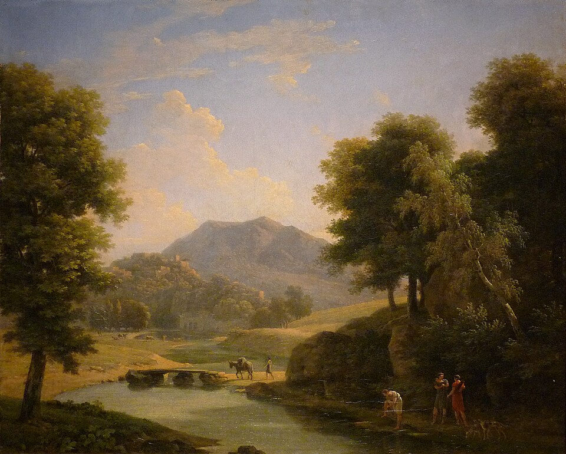
画像を拡大 ＋《風景》
- 作者
- ジャン＝ヴィクトール・ベルタン
- 制作時期
- 1820年
- 所在地・所蔵
- ランス美術館
- 素材・形式
- 油彩画
出典・画像について

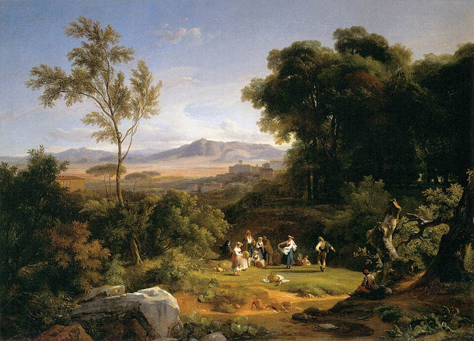
画像を拡大 ＋《フラスカティの眺めに想を得た風景》
- 作者
- アシル＝エトナ・ミシャロン
- 制作時期
- 1822年
- 所在地・所蔵
- ルーヴル美術館
- 素材・形式
- 油彩画
出典・画像について
特に異色だったのが、オランダのロイスダールに影響を受けたミシェルです。歴史画としてではなく、目の前の風景を描きました。しかし当時はほとんど評価されず、作品が後に評価されるのは、1900年の万国博覧会への出品を待たねばなりませんでした。ベルタンとミシャロンに学び、独自の様式を築いたのが、七星の一人コローです。

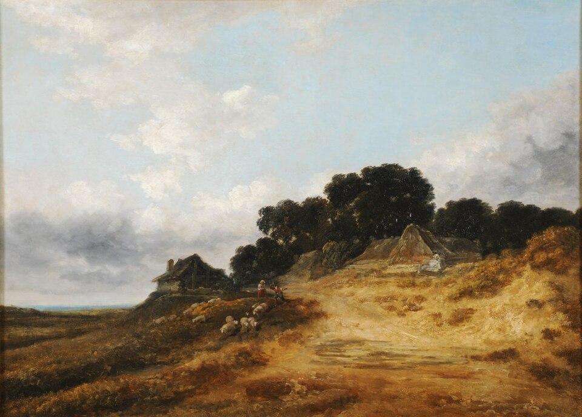
画像を拡大 ＋《森のはずれの藁ぶき小屋》
- 作者
- ジョルジュ・ミシェル
- 制作時期
- 1795年頃
- 所在地・所蔵
- ランス美術館（907.19.189）
- 素材・形式
- 油彩画
出典・画像について
コロー
コローとイギリス風景画、写生
動画 8:08～1824年、コンスタブルやターナーらイギリスの風景画家の作品がサロンに出品され、フランスの画壇を驚かせました。自然を細かく観察して生き生きと描くロマン主義の画家たちに、コローも影響を受けます。戸外で習作を描くベルタンとミシャロンに学んだ彼は、自らも旅してスケッチを残すことにしました。
1825年のイタリア旅行以降、ボーヴェ、ヴィル＝ダヴレー、フォンテーヌブロー、バルビゾンなど、パリ近郊を含む各地へ1865年まで旅しました。風景自体の美しさに魅せられ、構成のための下書きだった野外写生を、完成作品にまで高めます。同じ場所で写生を繰り返し、友人から、今日も永遠の下書きをするのかと呆れられるほどでしたが、それが確かな観察につながりました。19世紀半ばにフランスで流行したクリシェ・ヴェールにも没頭しました。

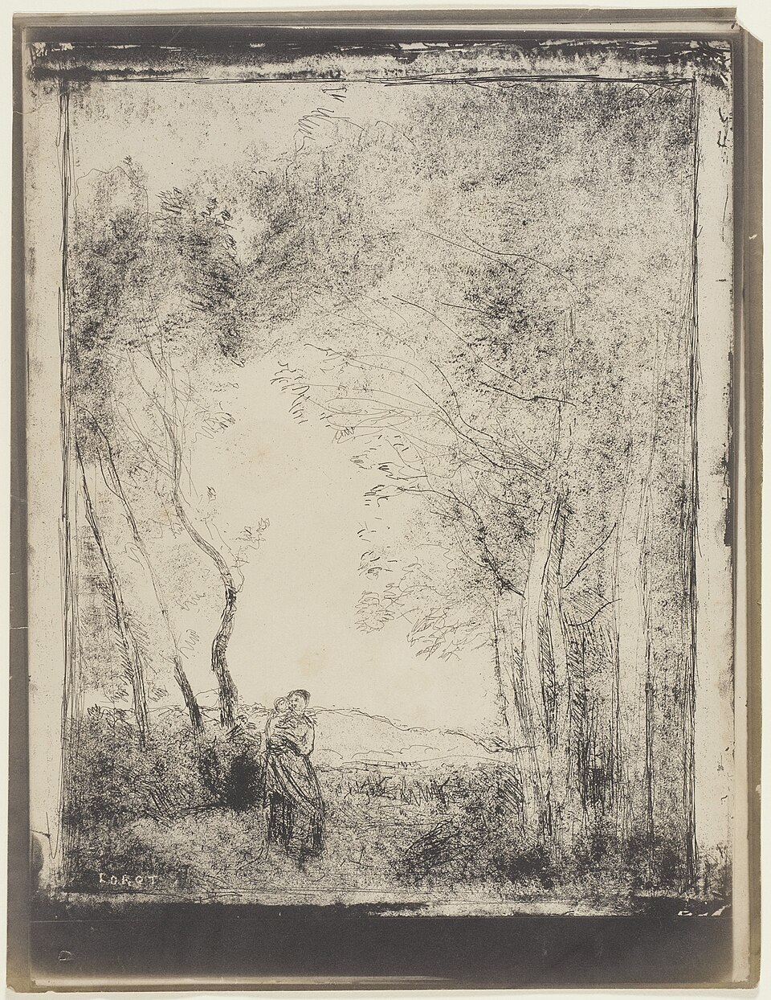
画像を拡大 ＋《森の入り口に立つ若い母親》
- 作者
- ジャン＝バティスト・カミーユ・コロー
- 制作時期
- 1856年
- 所在地・所蔵
- ロサンゼルス・カウンティ美術館（M.2001.18.1）
- 素材・形式
- クリシェ・ヴェール
出典・画像について
クリシェ・ヴェールの刷り。原版・印刷時期と、所蔵する刷りの個体を区別しています。
画像出典：Los Angeles County Museum of Art
Public domain（LACMA公開画像）
作品情報：作品・画像・利用条件
市民階級と風景画
動画 9:08～歴史画らしくない風景でもコローが評価されたのは、時代の変化があったからです。1815年のナポレオン失脚でブルボン朝が復古し、新古典主義一辺倒からロマン主義が台頭します。ルイ18世と後継のシャルル10世は、貴族や聖職者を優遇する時代錯誤の政策を取りましたが、その一方で裕福な市民階級が力を付けていました。
このブルジョアジーに好まれたのが風景画です。難しい知識を必要とする歴史的主題より、自然の風景が市民の心をつかみました。1830年の七月革命でブルボン朝が倒れ、市民階級が新たな支配層となったことも、自然主義的な風景画を後押しします。田舎へのノスタルジーを抱いた人々が、それらを高く評価したのでした。
記憶を重ねる銀灰色の風景
動画 10:25～コローは習作をパリのアトリエで完成させましたが、師のベルタンやミシャロンの新古典主義を全て捨てたわけではありません。習作に、その時の思い出を重ねて理想化しました。風景に溶け込む人物も、実際にいた人々の忠実な再現というより、印象と記憶から描いています。人物に合わせて風景を再構成するのではなく、風景に合うよう人物を再構成したのです。歴史的場面のために自然を無理に変えるのではなく、自らが感じた情景を載せるところに個性があり、人物が風景を際立たせました。

《セーヴルの道、パリの眺め》
- 作者
- ジャン＝バティスト・カミーユ・コロー
- 制作時期
- 1850年代（動画表示1858～1859年）
- 所在地・所蔵
- ルーヴル美術館（RF 1352、盗難作品として登録）
- 素材・形式
- 油彩画
出典・画像について
晩年には銀灰色に覆われた風景を描くようになります。神秘的な光の移り変わりに魅せられ、思い出を美しい色へ託しました。代表作《モルトフォンテーヌの思い出》は、霧がかかった詩的な光景です。晩年まで精力的に活動し、身近な人々の写実的な肖像画も描きました。

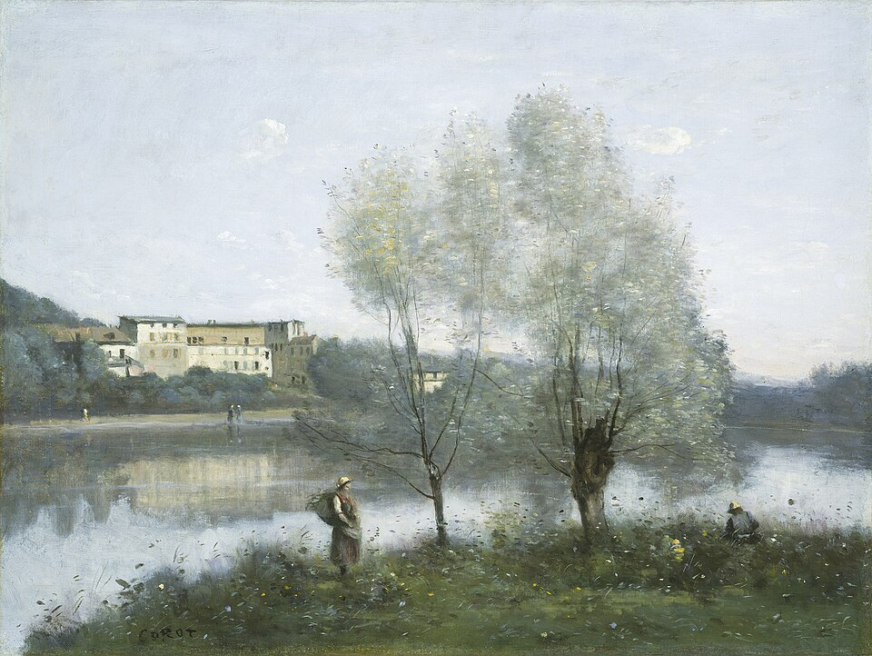
画像を拡大 ＋《ヴィル＝ダヴレー》
- 作者
- ジャン＝バティスト・カミーユ・コロー
- 制作時期
- 1865年頃
- 所在地・所蔵
- ナショナル・ギャラリー・オブ・アート、ワシントン（1955.9.1）
- 素材・形式
- 油彩画

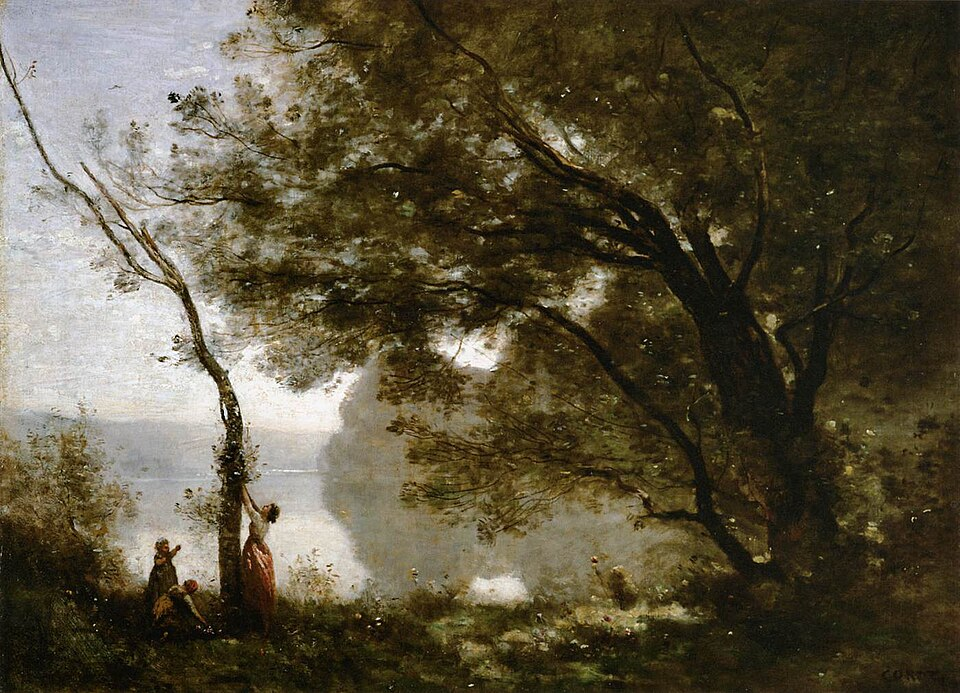
画像を拡大 ＋《モルトフォンテーヌの思い出》
- 作者
- ジャン＝バティスト・カミーユ・コロー
- 制作時期
- 1864年
- 所在地・所蔵
- ルーヴル美術館（MI 692 bis）
- 素材・形式
- 油彩画
出典・画像について

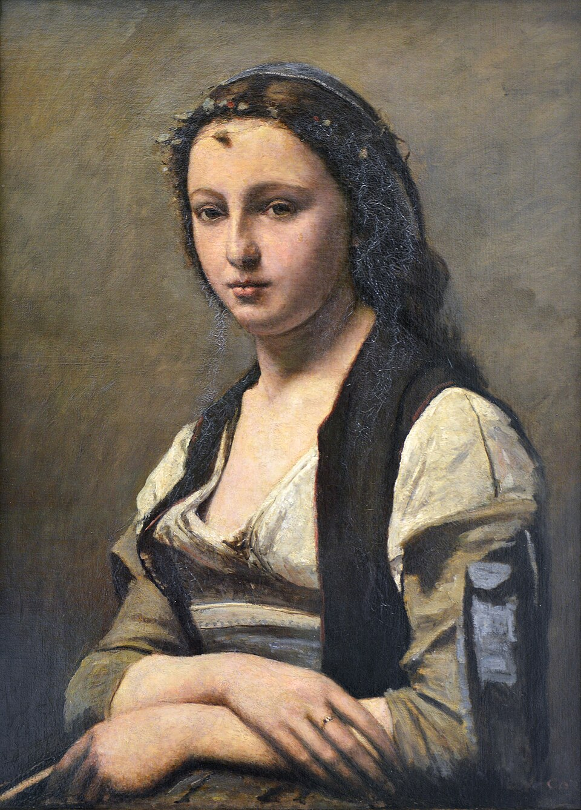
画像を拡大 ＋《真珠の女》
- 作者
- ジャン＝バティスト・カミーユ・コロー
- 制作時期
- 1868～1870年頃
- 所在地・所蔵
- ルーヴル美術館（RF 2040）
- 素材・形式
- 油彩画
出典・画像について
テオドール・ルソー
偉大なる落選画家ルソー
動画 11:42～コローは村を訪れて画家たちと積極的に交流しましたが、バルビゾン派の創始者とはいえません。そもそも、自然に画家が集まって生まれたもので、特定の一人が作ったというものではないでしょう。それでも成立に欠かせない人物が、「偉大なる落選画家」と呼ばれたテオドール・ルソーです。
若い頃から自然に興味を持ったルソーは風景画家を志し、早くからサロンへ入選して自信を深めました。しかし1836年、伝統的な慣習を無視した《ジュラ山脈の山下り》が落選します。失意からパリを離れ、バルビゾンに隠遁することにしました。幼い頃にフォンテーヌブローの森を訪れて魅せられた経験が、移る決め手でした。コローらも先に訪れていましたが、長期滞在という点ではルソーが先駆けでした。歴史的風景でなく、ありのままの自然を描こうとします。

《高ジュラ山地で牛の群れが下るところ（ジュラ山脈の山下り）》
- 作者
- テオドール・ルソー
- 制作時期
- 1834年頃
- 所在地・所蔵
- メスダッハ・コレクション、ハーグ（hwm0286）
- 素材・形式
- 油彩画
出典・画像について
1836年から1841年まで四度出品しましたが、全て落選し、「落選王」、グラン・ルフュゼと呼ばれました。風景画の地位が上がっても、アカデミーの伝統的な傾向は続いていました。感情を載せるロマン主義的なコローに対し、ルソーはより見えたままの自然を描いたため、正統派に受け入れられなかったのではないかと考えられます。審査方法も不可解で、恣意的に落とされたのではないかという話もあります。
村の友人たちと二月革命
動画 13:32～ルソーはサロンへの出品をやめ、1847年にはバルビゾンへ移住しました。しかし彼を慕う人は多く、村には画家たちが会いに来ました。七星の一人ディアズは、落選が続くなかでも教えを請うほど敬慕し、自らも村へ移りました。審査員に認められなくても、評価する人々はいたのです。
追い風となったのが、1848年の二月革命でした。大飢饉に苦しむ下層の労働者が蜂起して王政を倒し、1830年から王位にあったオルレアン朝のルイ＝フィリップが亡命します。立憲君主制に代わって生まれた民主制の象徴として、サロンの審査も緩和されました。審査員をアカデミー会員だけに限らず、入選枠も増やしたことで、ルソーは長い落選の時代を抜け出しました。
《森のはずれ、日没》とその評価
動画 14:35～1850～1851年のサロンに出品した《フォンテーヌブローの森のはずれ、日没》は、村の近くの風景を描いています。特筆すべきは、日没という特定の時刻を取り上げたことです。時間による変化を細かく観察した点が、後の印象主義への先駆けとなりました。作品は入賞し、購入もされます。

《フォンテーヌブローの森のはずれ、日没》
- 作者
- テオドール・ルソー
- 制作時期
- 1848～1849年
- 所在地・所蔵
- ルーヴル美術館（RF 112、ルーヴル・ランス展示）
- 素材・形式
- 油彩画
出典・画像について
出品年の補足
原解説では1849年のサロン出品とされていますが、ルーヴルの作品記録では1850～1851年のサロンと記載されています。作品の制作年代1848～1849年とは区別し、本文の出品年は所蔵館記録に合わせました。
確認資料：ルーヴル作品記録
1850年代にはルソーを中心にバルビゾン派の人気が高まり、1855年の万国博覧会へ出品した13点も好評でした。1867年に生涯を終えるまで、彼は愛するバルビゾンに住み続けました。アカデミックな慣習から離れた制作姿勢が、印象主義への架け橋となったのです。
七星の画家たち
ディアズの光と色
動画 15:36～コローとルソー以外の画家も、風景画の地位向上に貢献しました。ディアズはスペイン人の両親を持ち、パリの陶磁器製造会社の店員を経て彩色画家として画業を始めます。当初はオリエント文化やドラクロワに影響された人物画を描きましたが、1836年にバルビゾンでルソーと出会い、風景画へ向かいました。フォンテーヌブローの森を数多く描き、暗い森に差し込むわずかな光が、優れた色彩感覚を示します。

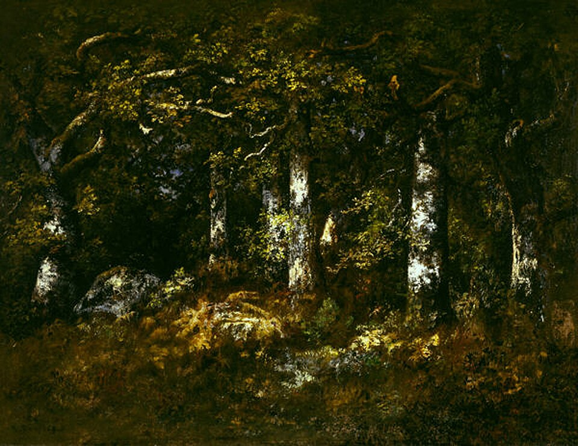
画像を拡大 ＋《フォンテーヌブローの森》
- 作者
- ナルシス＝ヴィルジル・ディアズ・ド・ラ・ペーニャ
- 制作時期
- 1868年
- 所在地・所蔵
- ダラス美術館（1991.14.M）
- 素材・形式
- 油彩画
出典・画像について
ディアズは、後の印象派の重要人物となる若いルノワールにも影響を与えました。色彩が明るくなったきっかけはディアズとの出会いだったと、ルノワール自身が語っています。差し込む光の表現にも、似たところがあります。

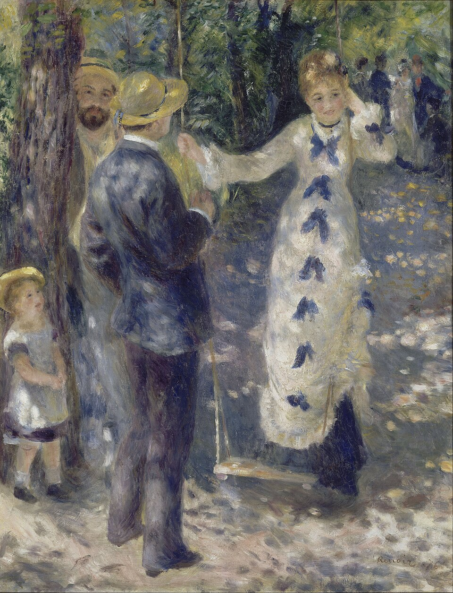
画像を拡大 ＋《ぶらんこ（La Balançoire）》
- 作者
- ピエール＝オーギュスト・ルノワール
- 制作時期
- 1876年
- 所在地・所蔵
- オルセー美術館、パリ（RF 2738）
- 素材・形式
- 油彩画
出典・画像について
デュプレとドービニー
動画 16:36～ジュール・デュプレはコンスタブルに憧れてイギリスへ赴き、その後ルソーと親交を深めました。自分のアトリエを貸すなど面倒見もよかったものの、1849年に仲たがいしています。作品にはコンスタブルの強い影響があり、近くで見ると荒々しいタッチが分かり、遠くから見る場合とは印象が異なります。一方、ルソーとの親交が深かった頃は、もっと抑制された自然主義的な画風でした。

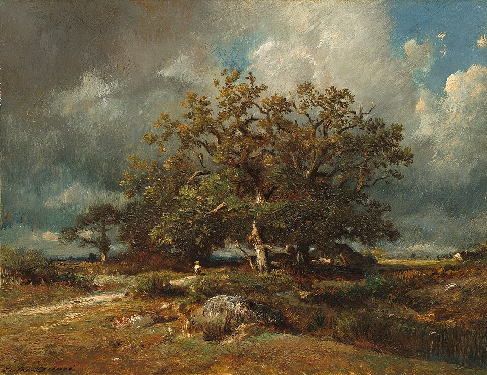
画像を拡大 ＋《古いオーク（The Old Oak）》
- 作者
- ジュール・デュプレ
- 制作時期
- 1870年頃
- 所在地・所蔵
- ナショナル・ギャラリー・オブ・アート、ワシントン（1949.1.5）
- 素材・形式
- 油彩画
出典・画像について
風景画家を父に持つドービニーは、コローと各地を旅し、バルビゾンも訪れました。「水辺の画家」の異名どおり、水辺を数多く描き、コローに似た銀白色の色合いも見られます。特に水面にきらめく光にこだわり、制作のため船を買って、十分な観察を重ねました。後の印象派の巨匠モネにも影響し、その作品に見られる水面の移り変わりにも、ドービニーの影響があります。

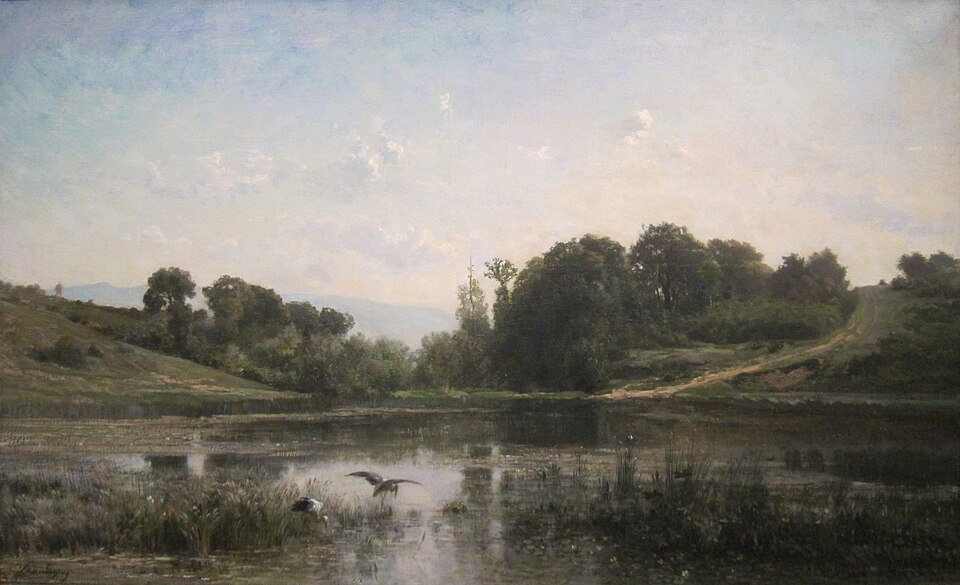
画像を拡大 ＋《ジリューの池（The Pond at Gylieu）》
- 作者
- シャルル＝フランソワ・ドービニー
- 制作時期
- 1853年
- 所在地・所蔵
- シンシナティ美術館（1940.969）
- 素材・形式
- 油彩画
出典・画像について
同題の候補は動画と別作品のため除外。同一個体を確定できず画像掲載保留。
《オワーズ川の川辺（個体未確定）》
- 作者
- シャルル＝フランソワ・ドービニー
- 制作時期
- 1868年（動画表示、外部照合未確定）
- 所在地・所蔵
- 未確定
- 素材・形式
- 油彩画
出典・画像について
同一個体を確定できず画像掲載保留。
制作メモ
同題の候補は動画と別作品のため除外。
トロワイヨンと現場へ出る画家
動画 17:44～トロワイヨンの関心は、風景より動物にありました。オランダ黄金時代の動物画家に影響され、各地を旅して家畜を主題に描き、その名声はフランスだけでなくイギリスにも届いたとされます。バルビゾン派といっても、描き方や主題はさまざまで、革新は技法以上に制作姿勢にありました。
候補は動画と別作品。同一個体の年代・所蔵も確定できず画像掲載保留。
《ノルマンディー、牛と羊の群れの帰り道（個体未確定）》
- 作者
- コンスタン・トロワイヨン
- 制作時期
- 1856年（動画表示、外部照合未確定）
- 所在地・所蔵
- 未確定
- 素材・形式
- 油彩画
出典・画像について
同一個体の年代・所蔵も確定できず画像掲載保留。
制作メモ
候補は動画と別作品。
美術評論家フレデリック・アンリエは著書で、画家が道具を背負い、つばの広い帽子をかぶり、水筒を首飾りのように持って現場へ向かう姿を描写しています。折り畳み椅子の安定する場所を探し、イーゼルを据え、カンヴァスを固定するため二つの棚板を配置します。こうして道具一式を広げて準備する姿は、村人を不思議がらせました。求めるのは必ずしも広大な地平線や仰々しい輪郭ではなく、小集落や農場の身近な主題であり、現場で田園生活の親密さをつかもうとしたのでした。戸外制作と、風景の主題の変化こそが革新的だったのです。
ミレーと社会の問題
動画 19:00～七星のもう一人、ジャン＝フランソワ・ミレーは、風景ではなく、バルビゾンを中心に暮らす農民を描きました。その何気ない作品は、批評家の間で大きな賛否を巻き起こします。背景には、ナポレオン・ボナパルトの甥ルイ＝ナポレオンによるフランス第二帝政と、革命を経ても広がる貧富の格差、都市と田舎の格差への意識の高まりがありました。ミレーは知らず知らずのうちに、こうした社会の問題へ巻き込まれていきました。
要点まとめ
- バルビゾン派は1830年代からフランスに現れた風景画家たち。パリの南約60キロ、フォンテーヌブローの森に近いバルビゾン村に集まったことから名が付いた。レアリスムや印象主義に影響を与えた。
- 中心となった「バルビゾンの七星」は、コロー、ディアズ、デュプレ、トロワイヨン、ドービニー、ミレー、テオドール・ルソー。
- それまでの風景画は、歴史画を頂点とする序列のもとで神話や古代の場面を添え、人物に合わせて理想化し、アトリエで仕上げるのが通例だった。1870年代にチューブ絵の具が普及するまで、屋外制作も難しかった。
- 戸外制作の先駆けには、18世紀末からのベルタン、ミシャロン、ロイスダールに影響を受けたミシェルがいる。
- コローは1824年のサロンでコンスタブルらイギリスの風景画に影響を受け、野外写生を完成作品にまで高めた。風景に合うよう人物を再構成し、晩年には《モルトフォンテーヌの思い出》など銀灰色の風景を描いた。
- ブルボン朝の復古後に力を付けた市民階級（ブルジョアジー）が風景画を好み、1830年の七月革命も自然主義的な風景画を後押しした。
- テオドール・ルソーは1836年から落選を重ねて「落選王（グラン・ルフュゼ）」と呼ばれ、バルビゾンに移住した。1848年の二月革命でサロンの審査が緩和されて入選し、《フォンテーヌブローの森のはずれ、日没》で特定の時刻を描いて印象主義の先駆けとなった。
- ディアズは森に差し込む光を描きルノワールに影響し、デュプレはコンスタブルの影響を受けた。「水辺の画家」ドービニーは船を買って水面の光を観察し、モネに影響した。トロワイヨンは家畜を描いた動物画家である。
- バルビゾン派の革新は、戸外制作と、身近な田園へ向かう風景の主題の変化にあった。ミレーは農民を描き、第二帝政下の格差の問題に巻き込まれていった。
確認問題
答えを考えてから開いてください。選択問題は選ぶとすぐ正誤と解説が出ます（選択肢の順番は開くたびに変わります）。各問題のリンクから該当の章や作品カードへ戻れます。
選択問題：0／5問回答・正解0
A. 一問一答答えを考えてから開く
問11836年以降サロンで落選を続けて「落選王（グラン・ルフュゼ）」と呼ばれ、バルビゾンに移り住んだ画家は誰か。
答えを見る
問21870年代に普及し、屋外へ絵の具を持ち運ぶ難しさを解消したものは何か。
答えを見る
問3「水辺の画家」と呼ばれ、水面のきらめく光を観察するために船を買った、バルビゾンの七星の一人は誰か。
答えを見る
B. 4択選ぶとすぐ正誤と解説
問4「バルビゾンの七星」に含まれない画家は誰か。
→ 本文で確認（バルビゾンの七星）
問5ルノワールが、自分の色彩が明るくなったきっかけだと語った出会いの相手は誰か。
→ 本文で確認（ディアズの光と色）
問61848年の二月革命は、ルソーにどのような変化をもたらしたか。
→ 本文で確認（村の友人たちと二月革命）
C. 図版問題画像を見て答える
問7この作品の名前と作者を答えよ。
答えを見る
問8この作品の作者は誰か。
→ 作品カードで確認
問9この作品の作者は誰か。
→ 作品カードで確認